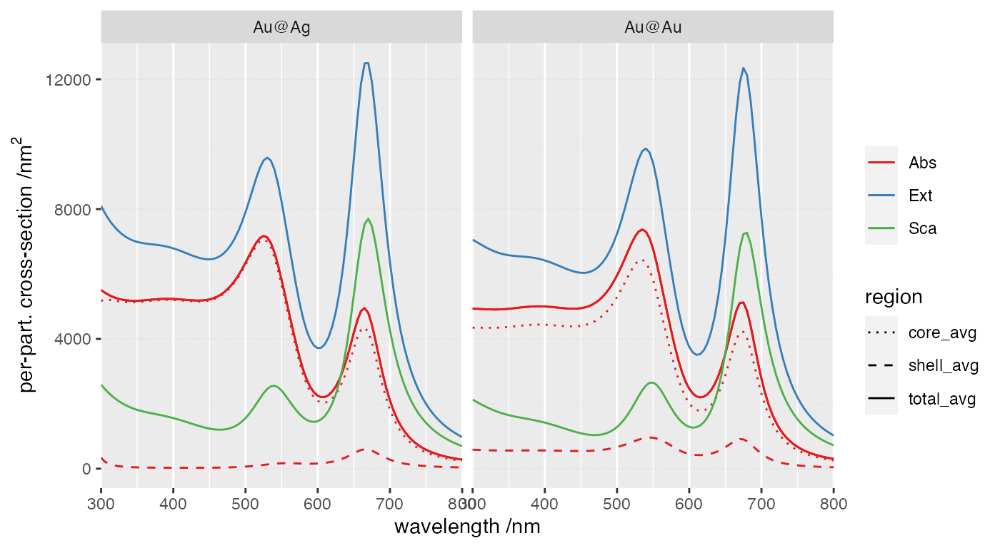

vignettes/10_shell_absorption/10_shell_absorption.Rmd
10_shell_absorption.RmdThis example illustrates the calculation of absorption spectra in
core-shell particles, separately for each layer. The structure consists
of two core-shell spheres Au@Ag in water, and for
comparison we also simulate a dummy Au@Au core-shell
structure with the same dimensions.
This simulation uses the following input file
ModeAndScheme 2 2
MultipoleCutoff 8
Wavelength 300 800 100
Incidence file incidence
Medium 1.7689 # for water
Verbosity 0
OutputFormat HDF5 cross_sections_AuAg
# 2 spheres spaced by 1nm along x
Scatterers 2
Au@Ag -30.5 0 0 30 29
Au@Ag 30.5 0 0 30 29Note that currently the partial absorptions are not orientation-averaged (analytically); we therefore use an external incident file with quadrature nodes and weights,
38
0.00000000 1.57079633 0.00000000 0.00952381
3.14159265 1.57079633 0.00000000 0.00952381
1.57079633 1.57079633 0.00000000 0.00952381
-1.57079633 1.57079633 0.00000000 0.00952381
1.57079633 0.00000000 0.00000000 0.00952381
1.57079633 3.14159265 0.00000000 0.00952381
0.78539816 0.95531662 0.00000000 0.03214286
0.78539816 2.18627604 0.00000000 0.03214286
-0.78539816 0.95531662 0.00000000 0.03214286
-0.78539816 2.18627604 0.00000000 0.03214286
2.35619449 0.95531662 0.00000000 0.03214286
2.35619449 2.18627604 0.00000000 0.03214286
-2.35619449 0.95531662 0.00000000 0.03214286
-2.35619449 2.18627604 0.00000000 0.03214286
1.09313802 1.57079633 0.00000000 0.02857143
-1.09313802 1.57079633 0.00000000 0.02857143
2.04845464 1.57079633 0.00000000 0.02857143
-2.04845464 1.57079633 0.00000000 0.02857143
0.47765831 1.57079633 0.00000000 0.02857143
-0.47765831 1.57079633 0.00000000 0.02857143
2.66393434 1.57079633 0.00000000 0.02857143
-2.66393434 1.57079633 0.00000000 0.02857143
0.00000000 0.47765831 0.00000000 0.02857143
0.00000000 2.66393434 0.00000000 0.02857143
3.14159265 0.47765831 0.00000000 0.02857143
3.14159265 2.66393434 0.00000000 0.02857143
0.00000000 1.09313802 0.00000000 0.02857143
0.00000000 2.04845464 0.00000000 0.02857143
3.14159265 1.09313802 0.00000000 0.02857143
3.14159265 2.04845464 0.00000000 0.02857143
1.57079633 0.47765831 0.00000000 0.02857143
1.57079633 2.66393434 0.00000000 0.02857143
-1.57079633 0.47765831 0.00000000 0.02857143
-1.57079633 2.66393434 0.00000000 0.02857143
1.57079633 1.09313802 0.00000000 0.02857143
1.57079633 2.04845464 0.00000000 0.02857143
-1.57079633 1.09313802 0.00000000 0.02857143
-1.57079633 2.04845464 0.00000000 0.02857143readInputFile> Parsing file input_AuAg
readInputFile> Detected keyword ModeAndScheme
mode=2 => spectrum_FF for far-field quantities
scheme=2 => Seek T^(ji) using Stout's iterative scheme
readInputFile> Detected keyword MultipoleCutoff
Supplied ncut(1)= 8
Setting ncut(2)= ncut(1)
Setting ncut(3)= -8
readInputFile> Detected keyword Wavelength
Wavelength LB (nm): 300.000000
Wavelength UB (nm): 800.000000
nsteps, step: 100 5.0000
readInputFile> Detected keyword Incidence
Incidence filename= incidence
Expected incidence count= 38
Incident Euler angles and weights:
alpha beta gamma weight
0.00000000 1.57079633 0.00000000 0.00952381
3.14159265 1.57079633 0.00000000 0.00952381
1.57079633 1.57079633 0.00000000 0.00952381
-1.57079633 1.57079633 0.00000000 0.00952381
1.57079633 0.00000000 0.00000000 0.00952381
1.57079633 3.14159265 0.00000000 0.00952381
0.78539816 0.95531662 0.00000000 0.03214286
0.78539816 2.18627604 0.00000000 0.03214286
-0.78539816 0.95531662 0.00000000 0.03214286
-0.78539816 2.18627604 0.00000000 0.03214286
2.35619449 0.95531662 0.00000000 0.03214286
2.35619449 2.18627604 0.00000000 0.03214286
-2.35619449 0.95531662 0.00000000 0.03214286
-2.35619449 2.18627604 0.00000000 0.03214286
1.09313802 1.57079633 0.00000000 0.02857143
-1.09313802 1.57079633 0.00000000 0.02857143
2.04845464 1.57079633 0.00000000 0.02857143
-2.04845464 1.57079633 0.00000000 0.02857143
0.47765831 1.57079633 0.00000000 0.02857143
-0.47765831 1.57079633 0.00000000 0.02857143
2.66393434 1.57079633 0.00000000 0.02857143
-2.66393434 1.57079633 0.00000000 0.02857143
0.00000000 0.47765831 0.00000000 0.02857143
0.00000000 2.66393434 0.00000000 0.02857143
3.14159265 0.47765831 0.00000000 0.02857143
3.14159265 2.66393434 0.00000000 0.02857143
0.00000000 1.09313802 0.00000000 0.02857143
0.00000000 2.04845464 0.00000000 0.02857143
3.14159265 1.09313802 0.00000000 0.02857143
3.14159265 2.04845464 0.00000000 0.02857143
1.57079633 0.47765831 0.00000000 0.02857143
1.57079633 2.66393434 0.00000000 0.02857143
-1.57079633 0.47765831 0.00000000 0.02857143
-1.57079633 2.66393434 0.00000000 0.02857143
1.57079633 1.09313802 0.00000000 0.02857143
1.57079633 2.04845464 0.00000000 0.02857143
-1.57079633 1.09313802 0.00000000 0.02857143
-1.57079633 2.04845464 0.00000000 0.02857143
readInputFile> Detected keyword Medium
Constant host epsilon= 1.7689E+0
readInputFile> Detected keyword Verbosity
verbosity= 0 (Silent)
readInputFile> Detected keyword OutputFormat
OutputFormat=HDF5
All output files are stored in file "cross_sections_AuAg.h5 "
readInputFile> Detected keyword Scatterers
with nscat= 2
readInputFile> Descriptor(s) and circumscribing sphere(s):
scatID String x y z R_0
1 Au@Ag -3.0500E+1 0.0000E+0 0.0000E+0 3.0000E+1
2 Au@Ag 3.0500E+1 0.0000E+0 0.0000E+0 3.0000E+1
readInputFile> Individual geometry characteristic(s):
scatID Details
1 Mie with ncoats= 1 R_{-k}: 2.9000E+1
2 Mie with ncoats= 1 R_{-k}: 2.9000E+1
readInputFile> Dielectric functions for (coated) Mie scatterer(s):
scatID volID Label
1 0 Ag
1 -1 Au
2 0 Ag
2 -1 Au
readInputFile> Finished parsing 8 keywords
termsProgram> Program run time (CPU & real in s): 1.461E+01 1.257E+01We first retrieve the total cross-sections, as usual,
group name otype dclass
0 / Far-Field H5I_GROUP
1 /Far-Field Incidences H5I_DATASET FLOAT
2 /Far-Field Wavelengths H5I_DATASET FLOAT
3 /Far-Field fixed_incidence H5I_GROUP
4 /Far-Field/fixed_incidence csAbs1X H5I_DATASET FLOAT
5 /Far-Field/fixed_incidence csAbs2Y H5I_DATASET FLOAT
6 /Far-Field/fixed_incidence csAbs3R H5I_DATASET FLOAT
7 /Far-Field/fixed_incidence csAbs4L H5I_DATASET FLOAT
8 /Far-Field/fixed_incidence csExt1X H5I_DATASET FLOAT
9 /Far-Field/fixed_incidence csExt2Y H5I_DATASET FLOAT
10 /Far-Field/fixed_incidence csExt3R H5I_DATASET FLOAT
11 /Far-Field/fixed_incidence csExt4L H5I_DATASET FLOAT
12 /Far-Field/fixed_incidence csSca1X H5I_DATASET FLOAT
13 /Far-Field/fixed_incidence csSca2Y H5I_DATASET FLOAT
14 /Far-Field/fixed_incidence csSca3R H5I_DATASET FLOAT
15 /Far-Field/fixed_incidence csSca4L H5I_DATASET FLOAT
16 /Far-Field oa_incidence H5I_GROUP
17 /Far-Field/oa_incidence cdAbsOA H5I_DATASET FLOAT
18 /Far-Field/oa_incidence cdExtOA H5I_DATASET FLOAT
19 /Far-Field/oa_incidence cdScaOA H5I_DATASET FLOAT
20 /Far-Field/oa_incidence csAbsOA H5I_DATASET FLOAT
21 /Far-Field/oa_incidence csExtOA H5I_DATASET FLOAT
22 /Far-Field/oa_incidence csScaOA H5I_DATASET FLOAT
23 /Far-Field partial_absorption H5I_GROUP
24 /Far-Field/partial_absorption csAbs1X_scat001coat0 H5I_DATASET FLOAT
25 /Far-Field/partial_absorption csAbs1X_scat001coat1 H5I_DATASET FLOAT
26 /Far-Field/partial_absorption csAbs1X_scat002coat0 H5I_DATASET FLOAT
27 /Far-Field/partial_absorption csAbs1X_scat002coat1 H5I_DATASET FLOAT
28 /Far-Field/partial_absorption csAbs2Y_scat001coat0 H5I_DATASET FLOAT
29 /Far-Field/partial_absorption csAbs2Y_scat001coat1 H5I_DATASET FLOAT
30 /Far-Field/partial_absorption csAbs2Y_scat002coat0 H5I_DATASET FLOAT
31 /Far-Field/partial_absorption csAbs2Y_scat002coat1 H5I_DATASET FLOAT
32 /Far-Field/partial_absorption csAbs3R_scat001coat0 H5I_DATASET FLOAT
33 /Far-Field/partial_absorption csAbs3R_scat001coat1 H5I_DATASET FLOAT
34 /Far-Field/partial_absorption csAbs3R_scat002coat0 H5I_DATASET FLOAT
35 /Far-Field/partial_absorption csAbs3R_scat002coat1 H5I_DATASET FLOAT
36 /Far-Field/partial_absorption csAbs4L_scat001coat0 H5I_DATASET FLOAT
37 /Far-Field/partial_absorption csAbs4L_scat001coat1 H5I_DATASET FLOAT
38 /Far-Field/partial_absorption csAbs4L_scat002coat0 H5I_DATASET FLOAT
39 /Far-Field/partial_absorption csAbs4L_scat002coat1 H5I_DATASET FLOAT
dim
0
1 38 x 4
2 101
3
4 101 x 39
5 101 x 39
6 101 x 39
7 101 x 39
8 101 x 39
9 101 x 39
10 101 x 39
11 101 x 39
12 101 x 39
13 101 x 39
14 101 x 39
15 101 x 39
16
17 101 x 9
18 101 x 9
19 101 x 9
20 101 x 9
21 101 x 9
22 101 x 9
23
24 101 x 39
25 101 x 39
26 101 x 39
27 101 x 39
28 101 x 39
29 101 x 39
30 101 x 39
31 101 x 39
32 101 x 39
33 101 x 39
34 101 x 39
35 101 x 39
36 101 x 39
37 101 x 39
38 101 x 39
39 101 x 39Rows: 606
Columns: 6
$ wavelength <dbl> 300, 305, 310, 315, 320, 325, 330, 335, 340, 345, 350, 355,…
$ crosstype <chr> "Abs", "Abs", "Abs", "Abs", "Abs", "Abs", "Abs", "Abs", "Ab…
$ variable <chr> "total", "total", "total", "total", "total", "total", "tota…
$ dichroism <dbl> -1.055521e-11, -1.091371e-11, -1.003158e-11, -1.083340e-11,…
$ average <dbl> 9862.443, 9854.690, 9843.744, 9831.910, 9821.330, 9813.848,…
$ case <chr> "Au@Au", "Au@Au", "Au@Au", "Au@Au", "Au@Au", "Au@Au", "Au@A…Additional files/fields in the form
csAbs4L_scat00{i}coat{i} are created for each layered
sphere, containing partial absorption cross-sections for particle \({i}\), up to layer \({j}\), with columns for each angle of
incidence and the weighted average,
To get the per-layer absorption we need to take the difference between successive coats.
Rows: 808
Columns: 5
Groups: scatterer, wavelength, polarisation [808]
$ polarisation <chr> "1X", "1X", "1X", "1X", "1X", "1X", "1X", "1X", "1X", "1X…
$ scatterer <int> 1, 1, 1, 1, 1, 1, 1, 1, 1, 1, 1, 1, 1, 1, 1, 1, 1, 1, 1, …
$ wavelength <dbl> 300, 305, 310, 315, 320, 325, 330, 335, 340, 345, 350, 35…
$ partial_0 <dbl> 4374.818, 4371.182, 4366.010, 4360.373, 4355.259, 4351.50…
$ partial_1 <dbl> 4954.835, 4945.920, 4935.638, 4925.236, 4915.845, 4908.41…Rows: 1,212
Columns: 6
$ scatterer <int> 1, 1, 1, 1, 1, 1, 1, 1, 1, 1, 1, 1, 1, 1, 1, 1, 1, 1, 1, 1,…
$ wavelength <dbl> 300, 300, 300, 305, 305, 305, 310, 310, 310, 315, 315, 315,…
$ region <chr> "total_avg", "shell_avg", "core_avg", "total_avg", "shell_a…
$ value <dbl> 4931.2215, 586.2634, 4344.9581, 4927.3451, 581.5501, 4345.7…
$ case <chr> "Au@Au", "Au@Au", "Au@Au", "Au@Au", "Au@Au", "Au@Au", "Au@A…
$ crosstype <chr> "Abs", "Abs", "Abs", "Abs", "Abs", "Abs", "Abs", "Abs", "Ab…In this plot the total absorption and per-particle absorption for the core-shell coincide.

The absorption in the Ag layer is maximum at the plasmon resonance of the dimer, the position of which is largely dictated by the gold cores.
Last run: 05 December, 2023